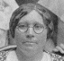
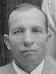

|  | Rosalia and Adolph |  |
|
My grandmother's parents are Adolph and Rosalia. They are European immigrants who moved to Northeastern Pennsylvania to pursue the American Dream. Adolph Dmochowski was born in Poland on November 11, 1884 to Blanche and Paul. As a young man, he worked the family farm. He came to this country when he was about 20 years old. He came to Pennsylvania right away, from what Grandma remembers being told, and starting working in the coal mines. He worked in the mines his entire life. Rosalia Rasimowicz was born in Lithuania on September 4, 1885 to Petronella and Casimir. She moved to this country when she was about 21 years old. Her sisters Agatha and Anna also came to live in the United States except Anna moved back to Lithuania on her husbands insistence. Rosalia first lived in Scranton and then moved to Pittston. Finally, she moved to Plains where she lived with her sister, Agatha, and worked at General Hospital. Agatha had a boarding house and Adolph was living there when Rosalia moved in to live with her sister. That is how Rosalia and Adolph met. They eventually married on April 30, 1911. |